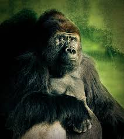
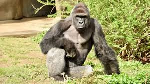

Gorillas are some of the most fascinating primates on Earth, known for their incredible strength, intelligence, and complex social structures. They live in groups called troops, usually led by a dominant silverback male who makes decisions for the group and protects them from threats. Despite their massive size and intimidating presence, gorillas are generally gentle and spend most of their day eating plants, fruits, and leaves. Their communication is also impressive, ranging from chest beating and vocal calls to subtle facial expressions that convey emotion.
What makes gorillas even more interesting is how closely related they are to humans, sharing about 98% of our DNA. Watching their behavior, whether it's a mother nurturing her baby or young gorillas play-fighting, feels strikingly familiar. Unfortunately, gorillas face major threats like habitat destruction and poaching, which has placed many subspecies on the endangered list. Conservation efforts are crucial to protect these incredible animals, not only because they’re important to biodiversity but also because they remind us of our own evolutionary story.
| Largest primates | Silverbacks can weigh up to 400 pounds. |
| Social structure | They live in troops led by a dominant silverback. |
| Genetics | Gorillas sharea about 98% of their DNA with humans |